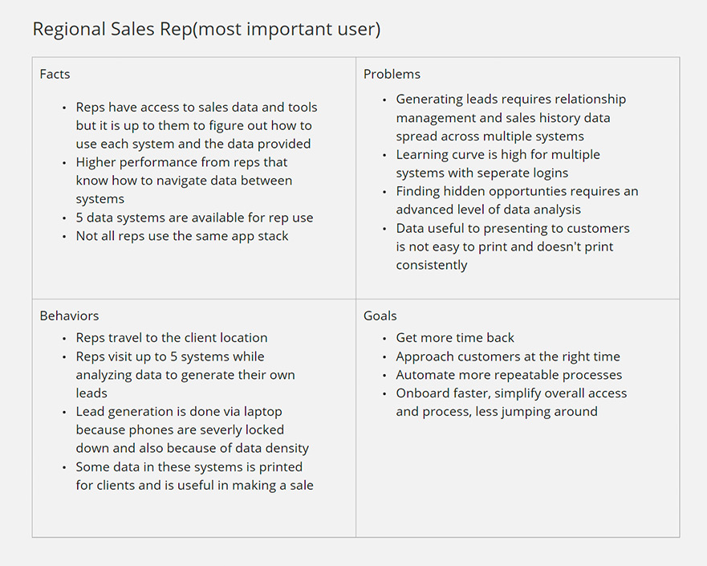
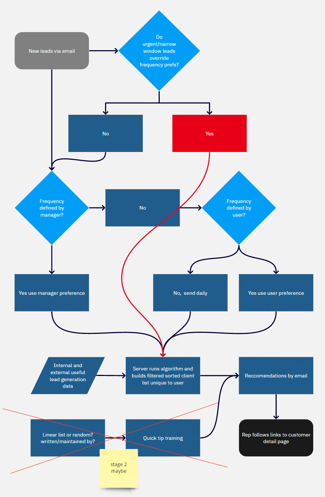
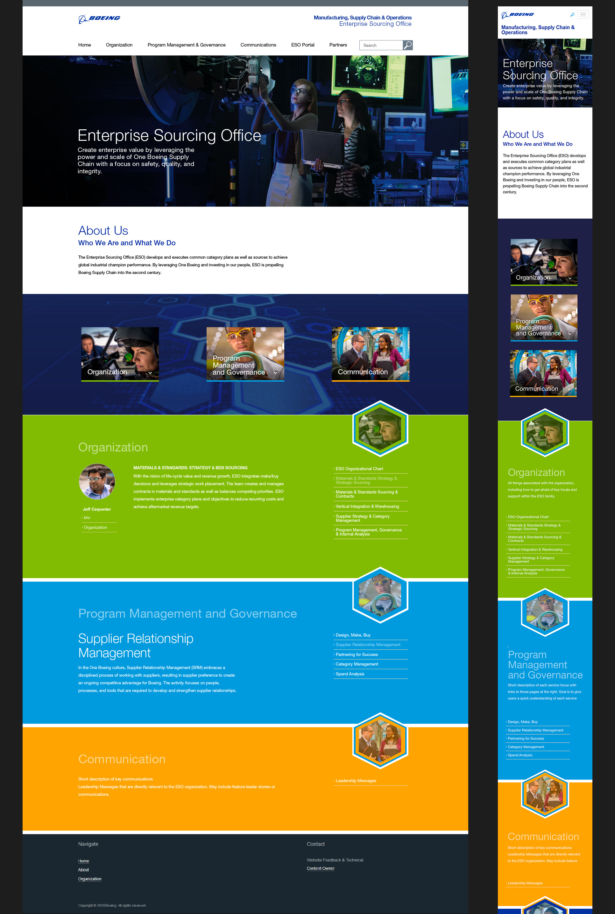
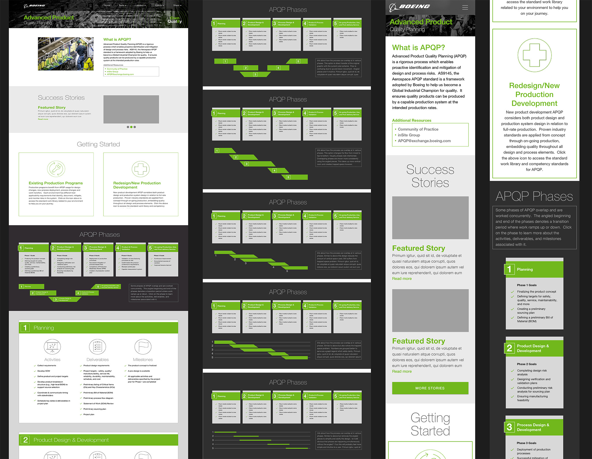
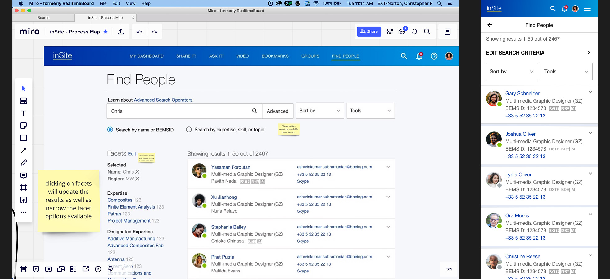
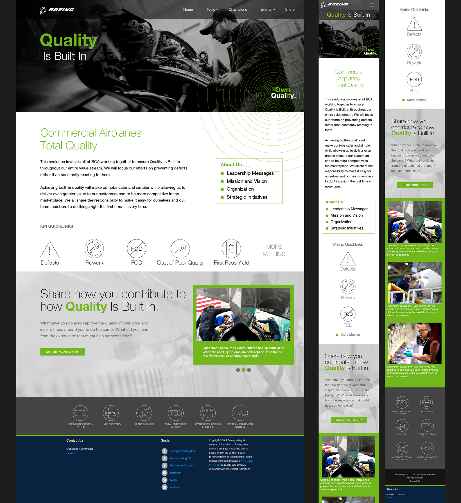

<!DOCTYPE html><html lang="en" id="top"><head><meta charset="UTF-8"/>
<meta name="viewport" content="width=device-width, initial-scale=1.0">
<meta http-equiv="X-UA-Compatible" content="IE=edge"/><title>Chris Norton: Designer</title><link rel="preconnect" href="https://fonts.googleapis.com">
<link rel="preconnect" href="https://fonts.gstatic.com" crossorigin><!--link(href='https://fonts.googleapis.com/css2?family=Open+Sans:wght@400;700&family=Source+Sans+3&display=swap', rel='stylesheet')--><link href="https://fonts.googleapis.com/css2?family=Arimo:ital,wght@0,400..700;1,400..700&amp;family=Source+Sans+3&amp;display=swap&amp;display=swap" rel="stylesheet"/><link rel="stylesheet" href="https://cdnjs.cloudflare.com/ajax/libs/font-awesome/6.5.0/css/all.min.css"/><link rel="stylesheet" href="styles/styles-2025.css"/><script src="js/polyfill.min.js"></script></head></html><body><div class="wrapper bg-light-1" data-title="Overview: Limited"><div class="page"><header class="ds-nav" id="mainNav" data-variant="light" data-sticky="true" role="banner"><div class="ds-nav__inner"><a class="ds-nav__logo" href="index.html" aria-label="Home"><span class="ds-nav__logo-wordmark">Christopher Norton</span></a><div class="ds-nav__actions"><a href="index.html">Home</a><a href="index.html#projects">Projects</a><!--a(href="#contactForm") Contact--><a class="linkedin" href="#contactForm"></a></div><button class="ds-nav__burger" id="burgerBtn" aria-label="Open menu" aria-expanded="false" aria-controls="mobileDrawer"><span></span><span></span><span></span></button></div><nav class="ds-nav__drawer" id="mobileDrawer" hidden="hidden" aria-label="Mobile navigation"><div class="ds-nav__drawer-panel" id="drawerPanelMain"><a class="ds-nav__drawer-link" href="index.html">Home</a><a class="ds-nav__drawer-link" href="index.html#projects">Projects</a><!--a.ds-nav__drawer-link(href="#contactForm") Contact//- /#drawerPanelMain
--></div><div class="ds-nav__drawer-panel" id="drawerPanelSections" hidden="hidden"><button class="ds-nav__drawer-back" id="drawerBackBtn" aria-label="Back to main menu"><svg viewBox="0 0 16 16" fill="none" aria-hidden="true"><path d="M10 3L5 8l5 5" stroke="currentColor" stroke-width="1.6" stroke-linecap="round" stroke-linejoin="round"></path></svg>Main menu</button><span class="ds-nav__drawer-eyebrow">On this page</span><div id="drawerSectionLinks"></div></div></nav></header><nav class="ds-section-nav" id="sectionNav" aria-label="Page sections"></nav><section class="bubble"><div class="content"><div class="page-nav top"><a class="back" href="index.html#projects"><i class="fa fa-solid fa-angle-left" aria-hidden="true"></i>Projects</a></div><h2 class="overline">Boeing</h2><p class="overline">New Business Generator</p><div class="tags"><div class="tag ux">UX</div><div class="tag ui">UI</div><div class="tag uxr">UXR</div><div class="tag redacted">Limited</div></div><h4>Limited</h4><p>Boeing's security policies mean I can't show the screens that handled billions in sales. What I can show is how I think — which is ultimately what drives impact at that scale anyway.</p><h4 data-title="Impact">Impact Summary</h4><ul><li>Designed the end-to-end flow for a predictive sales tool that surfaced the right customers to sales reps at the right moment in the buying cycle — directly supporting new business generation.</li><li>Reduced manual overhead for the sales team by designing automated lead delivery and a simplified onboarding flow — giving reps faster access to the data they actually needed in the field.</li><li>Eliminated a significant scope item in the first meeting by asking the right stakeholder the right question — saving the team tens of thousands of dollars before a single wireframe was drawn.</li><li>Established usability testing from zero, giving the team a repeatable process for measuring feature quality on an application that previously had none.</li><li>Prioritized feature work so the team was updating the highest-impact areas first rather than chasing feature parity with legacy products.</li><li>Designed flows for a system managing billions of dollars in sales, validating stakeholder access levels and automating lead delivery for the sales team.</li></ul><h4>The question that saved tens of thousands of dollars</h4><p>In my first meeting at Boeing I asked the head of sales one question: how would they actually use this predictive sales app out in the field? The answer was "Never. We will never use it that way." We cut the mobile requirement entirely. No prototype needed. No research sprint. Just the right question, asked to the right person, at the right time.</p><h6 data-title="Thinking">Sample Initial Questions</h6><p>Design always depends on context. Before starting on any design I'm always looking to understand what the solution is supposed to achieve and for who and under what constraints for both the business and the user.</p><ul class="checkmark-list"><li>What problem does this solve or what result are we aiming for?</li><li>Who is the audience?</li><li>When and where are they using our solution?</li><li>What facts and behaviors will likely affect the solution needed?</li><li>Do we need to validate any data?</li><li>How will we know it worked/how can it be measured?</li><li>What's the timeline to production?</li></ul><h6>Question Results</h6><p><small>Starter persona used to understand <strong>who</strong> I was designing for, <strong>where</strong> and <strong>when</strong> problems occurred before I could start thinking of solutions.</small></p><h6 data-title="Solutioning">Solutioning</h6><p>I can't show a lot of the predictive sales data or how managers configured those screens but one flow was to figure out how sales managers would configure or push emails and how sales reps would receive those email leads as well as all the preferences involved as shown below. This is just a small part of the application.</p><p><small>Mapping out a small part of the flow for when the application or manager decides to send sales reps important alerts and reports.</small></p><h5 data-title="Day to Day">A few more things I did during my time:</h5><ul><li>Designed a mix of enterprise-level internal web and mobile applications such as a zero to production predictive sales application and upgrading a legacy community social platform similar to Facebook.</li><li>Designed flows managing <strong>billions</strong> in sales, expanding new business, creating quotes, managing inventory, monitoring future trends, and pushing predictive intelligence to sales leaders.</li><li>Designed landing pages and one-off sites for various departments and program initiatives like safety training or automating actions. For example, submitting and pre-classifying artifacts of historical significance to the Boeing historical department.</li><li>Designed responsive-design flows for a social platform similar to Facebook, allowing Boeing to preserve decades of interdepartmental knowledge sharing.</li></ul><h5>Specifically</h5><ul><li>Validated stakeholders across a range of concerns and access privileges to CTAs and content.</li><li>Used Figma to create high-fidelity, interactive prototypes for web and mobile applications as well as external interactions like email notifications and augmented reality to scan objects.</li><li>Established usability metrics and testing from 0 to 1 with feedback forms on new features, and live usability testing and scoring on prototypes.</li><li>Prioritized features so teams could update the most impactful features first vs just feature-parity of legacy products.</li><li>Provided markup instructions to dev teams to execute flows.</li><li>Utilized IBM's <strong>Carbon</strong> Design System as Well as Google's <strong>Material</strong> Design System</li></ul><h4 data-title="More Examples">More Examples</h4><p>I worked on multiple, less secretive sites as well, but these launched quickly and there really wasn't a ton of iteration or data-driven design before launch date.</p><p class="full-img"><h6>Enterprise Sourcing Office</h6></p><p class="full-img"><h6>Advanced Quality Product Planning</h6></p><p class="full-img"><h6>inSite - Social Media Platform</h6></p><p class="full-img"><h6>Commercial Airplanes Total Quality</h6></p><div class="page-nav bottom"><a class="back" href="index.html#projects"><i class="fa fa-solid fa-angle-left" aria-hidden="true"></i>Projects</a></div></div></section></div></div></body><!--footer.bg-light-4--><!--    .social-links--><!--        h4(style='color: #345f7d') Site--><!--        a(href='index.html') Home--><!--        a(href='index.html#projects') Projects--><!--        a(href='https://www.linkedin.com/in/christopher-p-norton/', target='_blank') LinkedIn--><!--        //a(href='downloads/chris_norton_resume_ux_designer_2025-3.pdf', target='_blank') Resume--><!----><!--    .bio-group--><!--        .about-me--><!--            small <strong>Hidden Gem</strong>: I also developed this site from scratch using HTML5, CSS3, and JS using Node.js to run a local preview server which compiles and minifies Sass on the fly with Autoprefixer, CSS Lint and ES Lint. Version control is run through Github pages. I have a wide range of skills enabling me to bridge the communication gap between business stakeholders, designers and engineering teams.--><!----><!--        .bio--><!--            h6 Christopher Norton--><!--            p Senior Product UX Designer with 15+ years shipping enterprise-scale web and mobile applications. Launched 26+ products across B2B, B2C, and SaaS for <strong>Boeing</strong>, <strong>John Deere</strong>, <strong>Dell</strong>, <strong>Aprimo</strong>, <strong>Booz Allen</strong>, <strong>Animal Planet</strong>, and others — from solo 0-to-1 projects to cross-functional teams spanning multiple countries.--><!----><!--//form(method='post', name='contactForm', id='contactForm')
//    h6 Contact Me
//
//    .form-group
//        label(for='fullName') Full Name
//        input(name='fullName', id='fullName' type='text')
//    .form-group
//        label(for='email') Email
//        input(name='email', id='email' type='text')
//    .form-group
//        label(for='message') Message
//        textarea(name='message', id='message', rows="7")
//    .form-group
//        button(type='submit', id='submitContact') Send
//    .form-group
//        small#formStatus Your message has been sent.
--><script src="js/contact.js"></script><script src="js/navbar.js"></script>